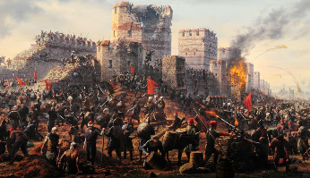

Tema 1.
2.2 Caída del imperio Bizantino
Razones por las que el imperio bizantino fue derrotado
Varios fueron los motivos que llevaron al final de los días del imperio romano. Se resumen en las siguientes
- Debilitamiento del Imperio: perdió territorios, riqueza y poder militar con el paso de los siglos. Los turcos otomanos (fueron un pueblo de origen turco y musulmanes, que creó un gran imperio en torno a la actual Turquía) conquistaron gran parte de sus tierras.

- Aislamiento: Constantinopla quedó prácticamente rodeada por los otomanos.

Debilidad militar: los bizantinos tenían pocos soldados para defender su capital. Tras haber invertido grandes cantidades de dinero y de personas en reconquistar todos aquellos territorios que habían perdido, las tropas que defendían la capital del imperio bizantino era mínimas como para poder defenderse.
Pregunta Verdadero-Falso
Indica si son verdaderas o falsas las siguientes afirmaciones.
Retroalimentación
Falso
Retroalimentación
Verdadero
Retroalimentación
Falso
Retroalimentación
Verdadero
Retroalimentación
Verdadero
Retroalimentación
Verdadero
Obra publicada con Licencia Creative Commons Reconocimiento Compartir igual 4.0